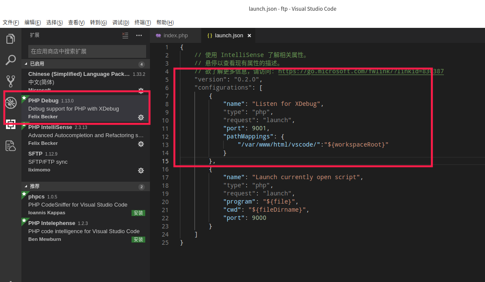
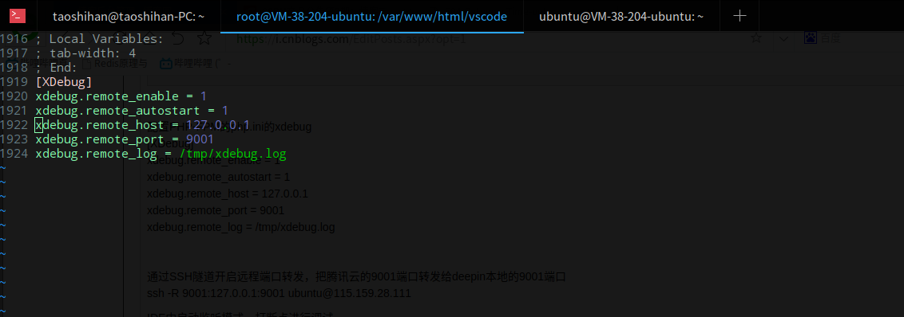
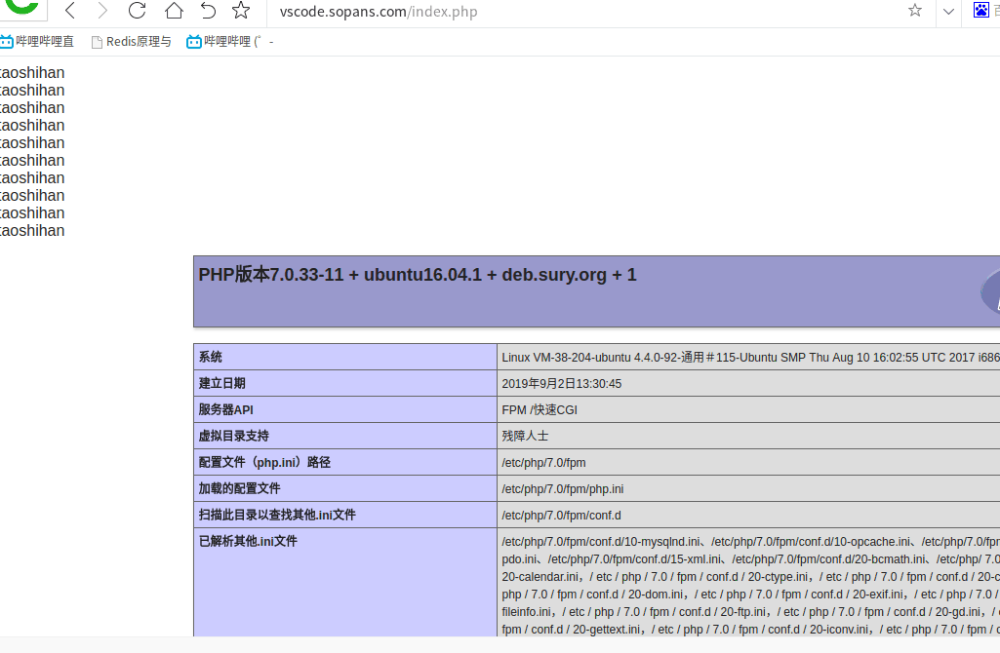

我的远程服务器是腾讯云的ubuntu系统机器，本地我的电脑系统是deepin的系统，使用的IDE是vscode。现在就来使用本地的IDE来调试腾讯云中为网站项目
实现逻辑是访问网站域名后，请求被转发给腾讯云本地的9001端口，通过ssh隧道，会直接被转发给deepin本地系统的9001端口。vscode会监听9001端口接收到腾讯云传递过来的请求，进入断点调试模式，结束后会把请求返回给腾讯云，腾讯云继续处理请求
首先安装必须的扩展
1.IDE中安装扩展PHP Debug，直接安装就行
2.腾讯云中安装xdebug的扩展，使用命令apt-get install php-xdebug
配置IDE的PHP Debug扩展

{
// 使用 IntelliSense 了解相关属性。
// 悬停以查看现有属性的描述。
// 欲了解更多信息，请访问: https://go.microsoft.com/fwlink/?linkid=830387
"version": "0.2.0",
"configurations": [
{
"name": "Listen for XDebug",
"type": "php",
"request": "launch",
"port": 9001,
"pathMappings": {
"/var/www/html/vscode/":"${workspaceRoot}"
}
},
{
"name": "Launch currently open script",
"type": "php",
"request": "launch",
"program": "${file}",
"cwd": "${fileDirname}",
"port": 9001
}
]
}
配置PHP-FPM的php.ini的xdebug
[XDebug]
xdebug.remote_enable = 1
xdebug.remote_autostart = 1
xdebug.remote_host = 127.0.0.1
xdebug.remote_port = 9001
xdebug.remote_log = /tmp/xdebug.log

通过SSH隧道开启远程端口转发，把腾讯云的9001端口转发给deepin本地的9001端口
ssh -R 9001:127.0.0.1:9001 ubuntu@115.159.28.111
IDE中启动监听模式，打断点进行调试

详细操作演示可以查看我的B站视频